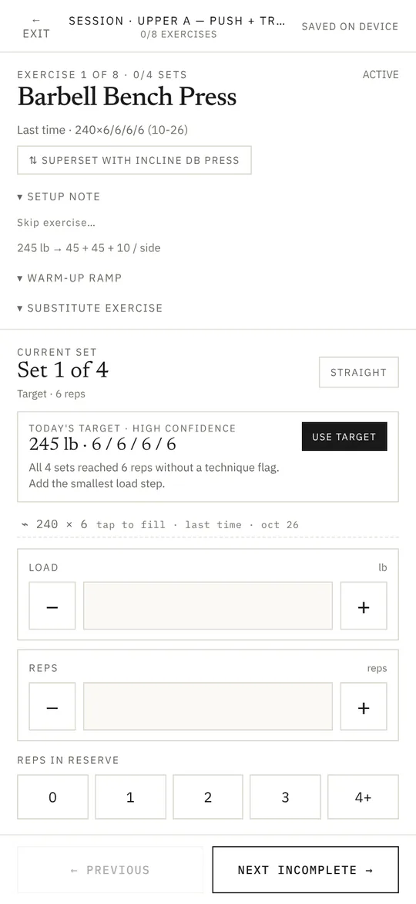
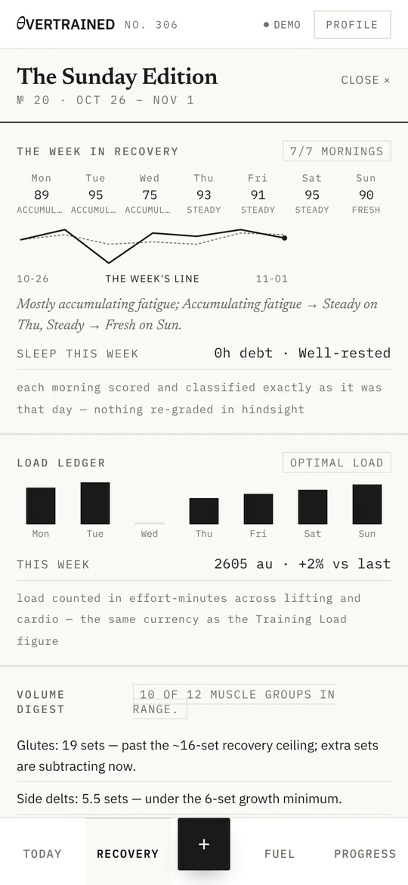
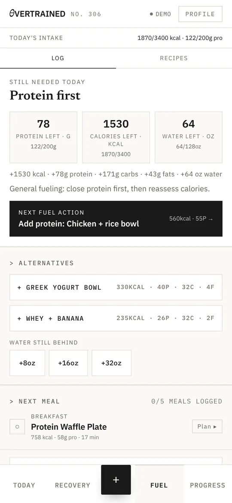

0VERTRAINED
A training app for athletes who lift and race, designed and built alone

Today: the day’s session, one tap from starting. 
Recovery asks how you feel before it shows the number. 
Every set last time hit its reps cleanly, so today’s target goes up the smallest step. 
The Sunday Edition reviews the week, each morning scored as it was that day. 
Fuel shows what’s still needed today and the next meal that closes it.
Captured from the app’s demo build, with seeded, made-up data.
0VERTRAINED is a private training ledger for people who lift and race. It logs strength, cardio, food and recovery, typed in or pulled from a wearable, and answers one question each morning: how hard should today be? I train this way myself, and I designed and built all of it, from the design system and the data model to the wearable integrations and the coach.
It’s in beta, with a cap on sign-ups. The camera form check is opt-in, and the AI coach is open only to my account for now.
- Built with
- React, Vite, Supabase (Postgres with row-level security), Netlify Functions, Web Push
- Wearables
- Oura, Whoop and Strava, over OAuth
- Models
- A coach on Ollama Cloud, routed between fast, main and deep models
- Status
- In beta, with a cap on sign-ups. The public site runs 19.6, the version shown here.
- Recovery
- Six named states, from Fresh to Deload advised, worked out from a week of HRV against the athlete’s own four-week baseline, never from a single morning. Oura is the main series and Whoop the fallback, and the two are never mixed.
- Training
- Targets that move from the last session, reps in reserve on every set, estimated one-rep-max trends, weekly sets per muscle against its growth range, a box score after every session, and a race plan that counts down through build and taper.
- Food
- Calorie needs measured from what the athlete eats against their smoothed weight trend, not a population formula, and meal plans from a constraint solver over 92 recipes.
- Coach
- Each question goes to a fast, main or deep model by what it asks, with a fallback, a daily limit and a kill switch. The server picks the model, never the browser, and the coach’s logs keep no questions or answers.
- Form check
- A short clip of a lift goes to a hosted pose engine, which deletes it and sends back only measurements. The app turns those into cues, rep by rep.
- Privacy
- Wearable tokens are encrypted and stay on the server. Server functions take the user from a verified session, never from the request. Strava data never reaches a model, and a forgotten password is reset with a recovery phrase, so no email is involved.
How it’s checked
| What was measured | Result |
|---|---|
| Automated tests, all passing | 2,030 in 170 files |
| Lint errors | 0, with 31 warnings |
| Secrets found by the release gate’s scan of the built app | 0 |
| Database tables with row-level security | 31 of 31 |
| Coach routing and safety cases, run offline | 10 of 10 |
Measured on version 19.6 on November 1, 2026.
The same morning, four times
By version 19.5, about twenty modules gave advice, and a dozen had a panel of their own. The Recovery tab read the same morning four times on the way down a phone: a verdict, a list of signals, a coach’s interpretation and a readiness score, with a caution between them. It ran to 2.7 screens.
Version 19.6 keeps the verdict at the top and moves the rest under Technical details, which brings the tab to just over one screen. Nothing it weighed was dropped. The verdict already counted every limiter, so moving the signals changed what you see, not what decides the day.